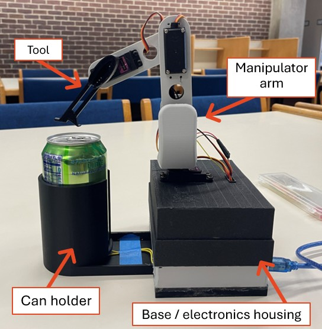
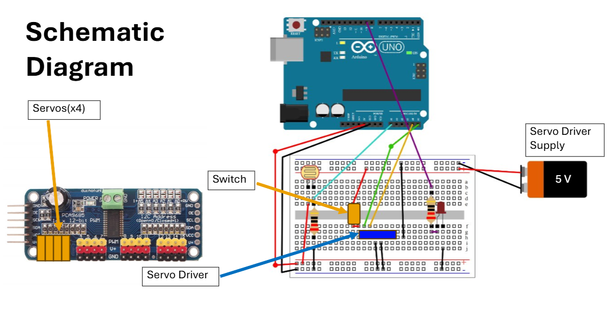
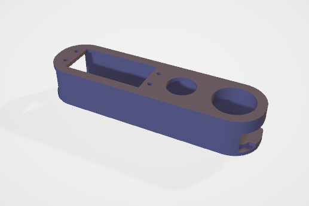
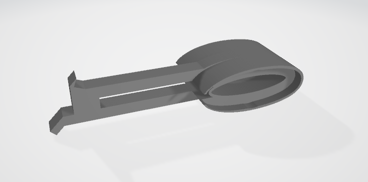
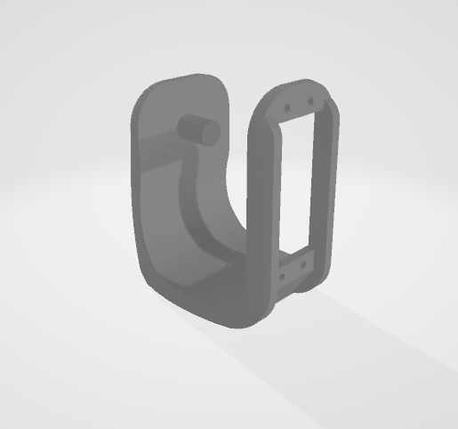
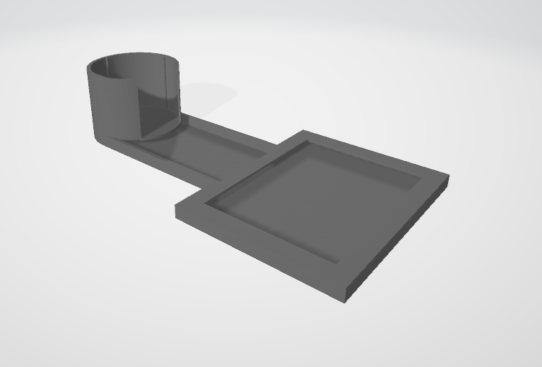
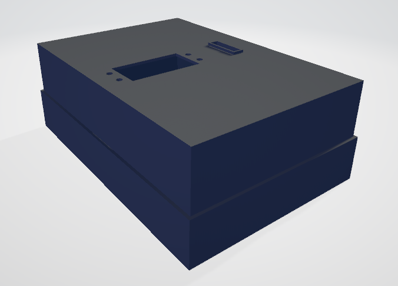
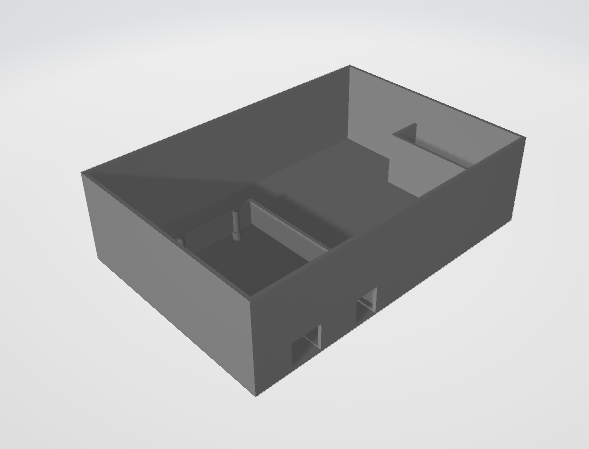

ECE 3161 Introduction to Robotics · UConn, Spring 2025
A 4-DOF servo-driven robotic arm that automatically opens a soda can placed in its holder. The whole machine is built around a 3D-printed structure I designed in CAD: base, two arm segments, can holder, and a custom tool that hooks under the tab. A photodiode in the can holder detects when a can has been placed, and the arm runs a hand-tuned motion sequence that hooks the tab, lifts it, and pulls it back to crack the can open.
It was a course project framed around assistive use cases. Opening a can is one of those tasks that's easy to overlook unless you have limited grip strength, at which point it can be a real daily problem. The motion sequencing problem is also a nice small-scale example of how an industrial pick-and-place task gets built up: figure out the physical steps required, then encode them as joint-angle setpoints with the right timing between them.
Full opening sequence triggered by placing a can in the holder. The photodiode at the bottom of the holder reads the drop in ambient light, the arm runs its hooking and lifting motion, and the tab cracks open.

Assembled robot: 3D-printed base / electronics housing, two-segment arm with four servos, can holder with embedded photodiode, and the tab-hooking tool
Everything mechanical was 3D-printed from CAD I designed: the two-piece base that houses the Arduino and servo driver, the two arm segments, the cylindrical can holder with a slot for the photodiode at its base, and the tool itself which was a thin hooked end-effector shaped specifically to slip under a soda-can tab and pull it back.
The arm has four servos: a base rotation joint, a shoulder, an elbow, and a wrist that controls the tool angle. All four are driven by a PCA9685 16-channel PWM driver over I²C from an Arduino Uno R3, which keeps the servo PWM signal off the Arduino's own timers and lets all four servos hold position cleanly at the same time.

Wiring overview: Arduino drives the PCA9685 over I²C, which drives all four servos. Photodiode and indicator LED are wired directly to the Arduino.
The Arduino reads the photodiode through analog input A0. The PCA9685 sits on the I²C bus and drives the four servos from a separate 5 V supply, so the Arduino's regulator isn't trying to source servo current. An indicator LED on a digital pin lights up when the photodiode reading drops below the threshold, i.e., when a can has been placed, as visual feedback that the system has detected the can.
Per-servo calibration.
Before anything else, I worked out the PWM pulse range for each of the four servos against the physical range of motion of its joint. Each servo gets its own min and max pulse value (e.g., 105–495, 140–510, 150–525, 100–500) that maps to the joint's usable 0–180° range. Without that calibration, sending the same angle command to two different joints can put them in very different positions because servos vary in their physical zero and travel.
The opening sequence.
Opening a tab is a small choreography of five steps rather than a single motion:
Each step is a sequence of setServoAngle() calls with short delays
between them. The trickiest parts, hooking and pulling back, use small per-iteration
increments to multiple joints in a loop, so the motion is smooth rather than jerky.
Several of these values were tuned by trial and error against an actual can: try a
sequence, watch what fails, adjust the angle or the delay, try again.
Photodiode trigger.
The opening sequence is gated on a light-level reading from the photodiode at the bottom of the can holder. With no can present, ambient light reaches the photodiode and the reading sits above the threshold. When a can is dropped in, the photodiode gets covered, the reading drops below threshold, and the sequence runs. This was deliberately a low-tech way of solving "did the user put a can in?" without needing a button.
Every plastic part on the robot, the base, arm segments, can holder, and tool, was modeled in CAD and printed iteratively. Most pieces went through two or three revisions: a first print would reveal that a servo horn didn't fit, that a tolerance was too tight for the print to actually snap together, or that the tool tip wasn't quite the right profile to slip under a tab. Each revision tightened the fit until the assembly worked cleanly.


CAD models of the arm segment (left) and the tab-hooking tool (right)


CAD models of the arm holder (left) and the can holder (right)


CAD models of the robot base, with a top (left) and bottom (right)